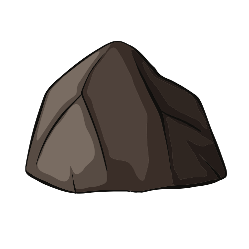
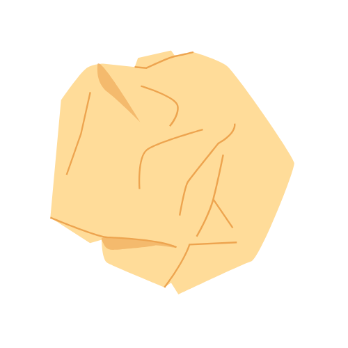
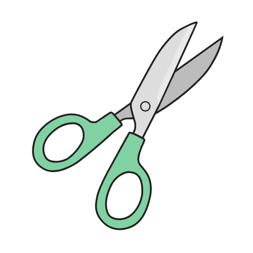

Bienvenido a Piedra, Papel o Tijera
Piedra, Papel o Tijera es un juego de manos para dos o más jugadores.
Es simple, divertido y rápido. ¡Perfecto para todas las edades!



Elige tu opción y juega ya:
Nuevo Juego
¿Cómo se juega?
- Crea un juego nuevo y selecciona el modo de juego.
- Ingresa tu nombre y elige tu movimiento: Piedra, Papel o Tijera.
- ¡Compite contra la máquina y ve quién gana!
Reglas del juego
Las reglas son simples:
- Piedra vence a Tijera.
- Tijera vence a Papel.
- Papel vence a Piedra.
Si ambos jugadores eligen el mismo movimiento, es un empate. ¡Inténtalo de nuevo!
Historia del juego
El juego de Piedra, Papel o Tijera tiene una larga historia que se remonta a la antigua China. Originalmente conocido como "shoushiling", este juego se ha convertido en un fenómeno mundial con diversas variantes.
Hoy en día, es un método popular para tomar decisiones rápidas y justas en muchas culturas.